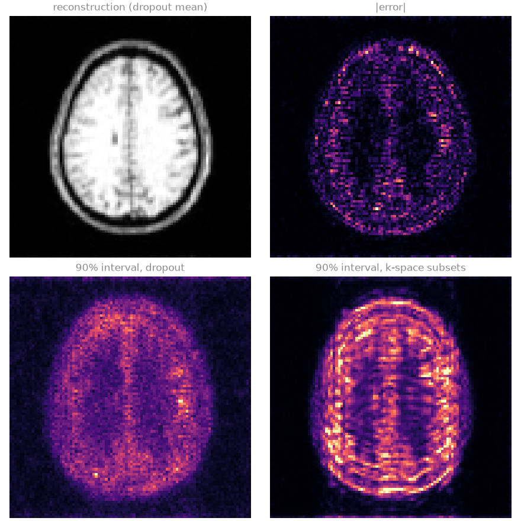

Note
Go to the end to download the full example code.
Uncertainty estimation#
Aim. Attach a voxel-wise error bar to a learned reconstruction of undersampled data, calibrated so that it contains the true error in a stated fraction of voxels, and see where in the head the reconstruction is least certain.
A learned reconstruction returns an image without saying where it may be wrong. Where the undersampling leaves the image underdetermined, the network fills in what its training data suggest, and a hallucinated structure looks like real anatomy. An uncertainty map is obtained by randomizing the reconstruction and repeating it: leaving dropout active in the network (Monte Carlo dropout [1]), reconstructing from random subsets of the acquired phase encodes, or shifting a patch grid. Each spread measures one source of variability, and none is the error itself. Split conformal calibration [2] relates the spread to the error on held-out slices with fully sampled references: it finds the factor by which the spread must be multiplied for the interval to contain the error at a chosen rate, a guarantee that holds whatever the spread measures.
Learning objectives
Obtain a spread from Monte Carlo dropout and from k-space subsets with
bartorch.learning.moments().Calibrate it to a coverage with
bartorch.learning.calibrate(), and check the coverage on other slices.Compare the calibrated interval with the error made.
It follows Annealed plug-and-play. This lesson ends the course; the standalone examples of Tours apply the package to individual problems.
import csv
import logging
from pathlib import Path
import brainweb_dl
import lightning
import numpy as np
import torch
from brainweb_dl import get_mri
from torch.utils.data import DataLoader
import bartorch
import bartorch.tools as bt
from bartorch import learning, linop, optim, priors
SIZE = 96
COILS = 8
ITERATIONS = 4
ACCELERATION = 4
EPOCHS = 8
DROPOUT = 0.1
_ = torch.manual_seed(0)
Data#
The slices, coils and fourfold undersampling of Staged training of an unrolled network, with sixteen slices of subject 4: the first eight to calibrate on, the last eight to check the calibration on.
train_images = brain_slices(subject=0, count=24)
valid_images = brain_slices(subject=4, count=16)
sensitivities = bt.coils(t=bt.grid(D=(SIZE, SIZE, 1)), n=COILS)[:, 0]
sensitivities = sensitivities / bartorch.rss(sensitivities, axes=(0,), keepdim=True)
density = torch.exp(-0.5 * ((torch.arange(SIZE) - SIZE / 2) / (SIZE / 6)) ** 2)
lines = torch.rand(SIZE, generator=torch.Generator().manual_seed(1)) < density / density.sum() * (
SIZE / ACCELERATION
)
lines[SIZE // 2 - 4 : SIZE // 2 + 4] = True
pattern = lines.to(torch.complex64)[:, None].expand(SIZE, SIZE).contiguous()
A = linop.CartesianSense(sensitivities, (SIZE, SIZE), pattern=pattern)
NOISE = 0.02
generator = torch.Generator().manual_seed(3)
kspace = {
part: [
A(x) + NOISE * torch.randn(A.oshape, dtype=torch.complex64, generator=generator)
for x in images
]
for part, images in (("train", train_images), ("valid", valid_images))
}
A network with dropout#
The iteration-conditioned unrolled network of Staged training of an unrolled network, with dropout in every residual block of its U-Net, trained end to end against references. Dropout is a regularizer during training; left active at inference it makes each reconstruction one draw from a family of networks.
torch.manual_seed(0)
network = learning.UNet(2, spatial=2, widths=(16, 32, 64), steps=True, dropout=DROPOUT)
prior = priors.ImplicitPrior(learning.ComplexNet(network, spatial=2), step=True)
block = optim.ISTBlock(prior, step=1.0)
block.step.requires_grad_()
model = learning.Unrolled(block, iterations=ITERATIONS, checkpoint=True)
items = {
part: [{"y": y, "A": A, "target": x} for x, y in zip(images, kspace[part])]
for part, images in (("train", train_images), ("valid", valid_images[:8]))
}
trainer = lightning.Trainer(
max_epochs=EPOCHS,
accelerator="cpu",
logger=False,
enable_checkpointing=False,
enable_model_summary=False,
enable_progress_bar=False,
)
trainer.fit(
learning.Reconstruction(model, "end-to-end", lr=1e-3),
DataLoader(items["train"], batch_size=4, shuffle=True, collate_fn=list),
DataLoader(items["valid"], batch_size=4, collate_fn=list),
)
/opt/hostedtoolcache/Python/3.12.14/x64/lib/python3.12/site-packages/lightning/pytorch/utilities/_pytree.py:21: `isinstance(treespec, LeafSpec)` is deprecated, use `isinstance(treespec, TreeSpec) and treespec.is_leaf()` instead.
/opt/hostedtoolcache/Python/3.12.14/x64/lib/python3.12/site-packages/lightning/pytorch/trainer/connectors/data_connector.py:434: The 'val_dataloader' does not have many workers which may be a bottleneck. Consider increasing the value of the `num_workers` argument` to `num_workers=3` in the `DataLoader` to improve performance.
/opt/hostedtoolcache/Python/3.12.14/x64/lib/python3.12/site-packages/lightning/pytorch/trainer/connectors/data_connector.py:434: The 'train_dataloader' does not have many workers which may be a bottleneck. Consider increasing the value of the `num_workers` argument` to `num_workers=3` in the `DataLoader` to improve performance.
Two spreads#
moments() calls a randomized reconstruction a
number of times and returns the voxel-wise mean and variance. The first
reconstruction leaves the dropout modules in training mode and everything
else in evaluation mode. The second keeps the network deterministic and
reconstructs each time from a random eighty per cent of the acquired lines,
drawn by split(), which measures how much the image
depends on individual samples.
model.eval()
dropouts = [m for m in model.modules() if isinstance(m, torch.nn.Dropout)]
acquired = lines.float()[:, None]
def with_dropout(y):
for module in dropouts:
module.train()
try:
return model(y, A)
finally:
for module in dropouts:
module.eval()
def from_a_subset(y):
keep, _ = learning.split(acquired, 0.2, keep=(8, 1))
subset = linop.CartesianSense(
sensitivities, (SIZE, SIZE), pattern=(pattern * keep).to(torch.complex64)
)
return model(y * keep, subset)
spreads = {}
for name, reconstruct in (("dropout", with_dropout), ("k-space subsets", from_a_subset)):
means, deviations = [], []
for y in kspace["valid"]:
mean, variance = learning.moments(lambda: reconstruct(y), samples=8)
means.append(mean)
deviations.append(variance.sqrt())
spreads[name] = (torch.stack(means), torch.stack(deviations))
truth = torch.stack(valid_images)
head = truth.abs() > 0.05
Calibration#
On the first eight slices, whose references are known, the factor that makes
|error| <= factor * spread hold for ninety per cent of the voxels in the
head is found with calibrate(). On the other eight
the fraction of voxels whose error falls within factor * spread is
measured. Split conformal calibration guarantees that fraction on average
over voxels and subjects drawn alike, not voxel by voxel.
COVERAGE = 0.9
calibration, test = slice(0, 8), slice(8, 16)
for name, (mean, deviation) in spreads.items():
error = (mean - truth).abs()
factor = learning.calibrate(
error[calibration][head[calibration]], deviation[calibration][head[calibration]], COVERAGE
)
inside = error[test] <= factor * deviation[test]
correlation = torch.corrcoef(
torch.stack([error[test][head[test]], deviation[test][head[test]]])
)[0, 1]
print(
f"{name:>16}: factor {factor:6.2f}, coverage {float(inside[head[test]].float().mean()):.3f}"
f" (asked {COVERAGE}), correlation of error and spread {float(correlation):.2f}"
)
dropout: factor 8.58, coverage 0.906 (asked 0.9), correlation of error and spread 0.26
k-space subsets: factor 3.82, coverage 0.897 (asked 0.9), correlation of error and spread 0.23
The coverage on the test slices is close to the one asked for, for both spreads, although their factors differ: the calibration absorbs whatever scale the spread has. What differs between them is how well the spread follows the error voxel by voxel, which the correlation measures and the maps below show. A spread that is large where the error is large gives narrow intervals where the reconstruction is reliable and wide ones where it is not; a spread unrelated to the error gives intervals of the right average width in the wrong places.
The two spreads measure different things, and the maps show it. The dropout interval is diffuse over the brain and follows neither its anatomy nor the error. The k-space-subset interval is largest at the scalp and in horizontal bands, the pattern of aliasing along the phase-encode direction (vertical): removing lines moves the aliasing, and that is the variability it records. The error itself is concentrated in the cortex. Both correlations are weak, so the intervals are wider than the error over much of the white matter and narrower than it in parts of the cortex. The coverage is met on average over voxels, as the calibration guarantees, not voxel by voxel.

References#
Total running time of the script: (0 minutes 45.436 seconds)